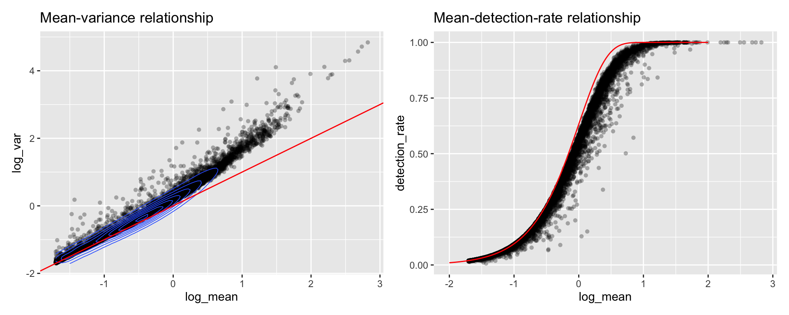

Last updated: 2020-01-11
Checks: 7 0
Knit directory: STUtility_web_site/
This reproducible R Markdown analysis was created with workflowr (version 1.5.0). The Checks tab describes the reproducibility checks that were applied when the results were created. The Past versions tab lists the development history.
Great! Since the R Markdown file has been committed to the Git repository, you know the exact version of the code that produced these results.
Great job! The global environment was empty. Objects defined in the global environment can affect the analysis in your R Markdown file in unknown ways. For reproduciblity it’s best to always run the code in an empty environment.
The command set.seed(20191031) was run prior to running the code in the R Markdown file. Setting a seed ensures that any results that rely on randomness, e.g. subsampling or permutations, are reproducible.
Great job! Recording the operating system, R version, and package versions is critical for reproducibility.
Nice! There were no cached chunks for this analysis, so you can be confident that you successfully produced the results during this run.
Great job! Using relative paths to the files within your workflowr project makes it easier to run your code on other machines.
Great! You are using Git for version control. Tracking code development and connecting the code version to the results is critical for reproducibility. The version displayed above was the version of the Git repository at the time these results were generated.
Note that you need to be careful to ensure that all relevant files for the analysis have been committed to Git prior to generating the results (you can use wflow_publish or wflow_git_commit). workflowr only checks the R Markdown file, but you know if there are other scripts or data files that it depends on. Below is the status of the Git repository when the results were generated:
Ignored files:
Ignored: .Rproj.user/
Ignored: analysis/getting_started_cache/
Note that any generated files, e.g. HTML, png, CSS, etc., are not included in this status report because it is ok for generated content to have uncommitted changes.
There are no past versions. Publish this analysis with wflow_publish() to start tracking its development.
In order to normalize the data we recommend using variance stabilized transformation available in the SCTransform function in Seurat as of v3.0.
Following the rationale expressed below, we transform the data according to the Seurat workflow.
se <- SCTransform(se, vars.to.regress = "nFeature_RNA")Note: for comprehensive tutorials in the different options and workflow possibilities available within Seurat, we recommend looking at their website https://satijalab.org/seurat/. Special consideration should be put into if and how the user apply the vars.to.regress parameter, which specifies which variables to regress out. This can be used to correct for heterogeneity in the data that is of no interest.
Each spot in a Spatial Transcriptomics dataset typically contains RNA from a mixture of cells so why would we apply a workflow that was developed for single-cell RNAseq data? We can calculate some properties to visually inspect the data to see that ST data have similar properties to that of scRNAseq data.
library(Matrix)
library(magrittr)
library(dplyr)
library(ggplot2)
# Get raw count data
umi_data <- GetAssayData(object = se, slot = "counts", assay = "RNA")
dim(umi_data)
# Calculate gene attributes
gene_attr <- data.frame(mean = rowMeans(umi_data),
detection_rate = rowMeans(umi_data > 0),
var = apply(umi_data, 1, var),
row.names = rownames(umi_data)) %>%
mutate(log_mean = log10(mean), log_var = log10(var))
# Obtain spot attributes from Seurat meta.data slot
spot_attr <- se[[c("nFeature_RNA", "nCount_RNA")]]
p1 <- ggplot(gene_attr, aes(log_mean, log_var)) +
geom_point(alpha = 0.3, shape = 16, color = "white") +
geom_density_2d(size = 0.3) +
geom_abline(intercept = 0, slope = 1, color = 'red') +
ggtitle("Mean-variance relationship") + DarkTheme()
# add the expected detection rate under Poisson model
x = seq(from = -2, to = 2, length.out = 1000)
poisson_model <- data.frame(log_mean = x, detection_rate = 1 - dpois(0, lambda = 10^x))
p2 <- ggplot(gene_attr, aes(log_mean, detection_rate)) +
geom_point(alpha = 0.3, shape = 16, color = "white") +
geom_line(data = poisson_model, color='red') +
ggtitle("Mean-detection-rate relationship") + DarkTheme()
cowplot::plot_grid(p1, p2, nrow = 2)
We can see from the mean-variance and Mean-detection-rate scatter plots that genes show overdispersion compared to what would be expected under a Poisson model. Because these properties are shared between ST and scRNAseq data we have reasoned that the workflow presented in the Seurat package should be applicable for ST data as well. It is important however to keep in mind that each spots contains a mixture of cell types and should be interpreted as a morphological unit in the context of a tissue section.
A work by Joseph Bergenstråhle and Ludvig Larsson
sessionInfo()R version 3.6.1 (2019-07-05)
Platform: x86_64-w64-mingw32/x64 (64-bit)
Running under: Windows 10 x64 (build 18363)
Matrix products: default
locale:
[1] LC_COLLATE=English_Sweden.1252 LC_CTYPE=English_Sweden.1252
[3] LC_MONETARY=English_Sweden.1252 LC_NUMERIC=C
[5] LC_TIME=English_Sweden.1252
attached base packages:
[1] parallel stats4 stats graphics grDevices utils datasets
[8] methods base
other attached packages:
[1] dplyr_0.8.3 magrittr_1.5
[3] Matrix_1.2-17 STutility_0.1.0
[5] ggplot2_3.2.1 SingleCellExperiment_1.6.0
[7] SummarizedExperiment_1.14.1 DelayedArray_0.10.0
[9] BiocParallel_1.18.1 matrixStats_0.55.0
[11] Biobase_2.44.0 GenomicRanges_1.36.1
[13] GenomeInfoDb_1.20.0 IRanges_2.18.2
[15] S4Vectors_0.22.1 BiocGenerics_0.30.0
[17] Seurat_3.1.1.9023
loaded via a namespace (and not attached):
[1] reticulate_1.13 R.utils_2.9.0
[3] tidyselect_0.2.5 htmlwidgets_1.3
[5] grid_3.6.1 Rtsne_0.15
[7] munsell_0.5.0 codetools_0.2-16
[9] ica_1.0-2 future_1.15.0
[11] miniUI_0.1.1.1 withr_2.1.2
[13] colorspace_1.4-1 knitr_1.24
[15] ROCR_1.0-7 tensor_1.5
[17] gbRd_0.4-11 listenv_0.7.0
[19] labeling_0.3 Rdpack_0.11-0
[21] git2r_0.26.1 GenomeInfoDbData_1.2.1
[23] polyclip_1.10-0 rprojroot_1.3-2
[25] vctrs_0.2.0 xfun_0.9
[27] R6_2.4.0 doParallel_1.0.15
[29] rsvd_1.0.2 Morpho_2.7
[31] ggiraph_0.6.1 manipulateWidget_0.10.0
[33] bitops_1.0-6 spatstat.utils_1.13-0
[35] assertthat_0.2.1 promises_1.0.1
[37] SDMTools_1.1-221.1 scales_1.0.0
[39] imager_0.41.2 gtable_0.3.0
[41] npsurv_0.4-0 globals_0.12.4
[43] bmp_0.3 goftest_1.1-1
[45] workflowr_1.5.0 rlang_0.4.1
[47] zeallot_0.1.0 akima_0.6-2
[49] systemfonts_0.1.1 splines_3.6.1
[51] lazyeval_0.2.2 rgl_0.100.30
[53] yaml_2.2.0 reshape2_1.4.3
[55] abind_1.4-5 crosstalk_1.0.0
[57] backports_1.1.4 httpuv_1.5.2
[59] tools_3.6.1 gplots_3.0.1.1
[61] raster_3.0-7 RColorBrewer_1.1-2
[63] Rvcg_0.18 ggridges_0.5.1
[65] Rcpp_1.0.3 plyr_1.8.4
[67] zlibbioc_1.30.0 purrr_0.3.3
[69] RCurl_1.95-4.12 rpart_4.1-15
[71] deldir_0.1-23 viridis_0.5.1
[73] pbapply_1.4-2 cowplot_1.0.0
[75] zoo_1.8-6 ggrepel_0.8.1
[77] cluster_2.1.0 colorRamps_2.3
[79] fs_1.3.1 data.table_1.12.2
[81] magick_2.2 readbitmap_0.1.5
[83] lmtest_0.9-37 RANN_2.6.1
[85] fitdistrplus_1.0-14 shinyjs_1.0
[87] lsei_1.2-0 mime_0.7
[89] evaluate_0.14 xtable_1.8-4
[91] jpeg_0.1-8.1 gridExtra_2.3
[93] compiler_3.6.1 tibble_2.1.3
[95] KernSmooth_2.23-15 crayon_1.3.4
[97] R.oo_1.22.0 htmltools_0.3.6
[99] mgcv_1.8-28 later_0.8.0
[101] tiff_0.1-5 tidyr_1.0.0
[103] RcppParallel_4.4.3 MASS_7.3-51.4
[105] R.methodsS3_1.7.1 gdata_2.18.0
[107] metap_1.1 igraph_1.2.4.1
[109] pkgconfig_2.0.2 sp_1.3-2
[111] plotly_4.9.1 xml2_1.2.2
[113] foreach_1.4.7 webshot_0.5.1
[115] XVector_0.24.0 bibtex_0.4.2
[117] stringr_1.4.0 digest_0.6.22
[119] sctransform_0.2.0 RcppAnnoy_0.0.12
[121] tsne_0.1-3 spatstat.data_1.4-0
[123] rmarkdown_1.15 leiden_0.3.1
[125] uwot_0.1.4 gdtools_0.2.0
[127] shiny_1.3.2 gtools_3.8.1
[129] lifecycle_0.1.0 nlme_3.1-141
[131] jsonlite_1.6 viridisLite_0.3.0
[133] pillar_1.4.2 lattice_0.20-38
[135] httr_1.4.1 survival_2.44-1.1
[137] glue_1.3.1 spatstat_1.61-0
[139] png_0.1-7 iterators_1.0.12
[141] stringi_1.4.3 caTools_1.17.1.2
[143] irlba_2.3.3 future.apply_1.3.0
[145] ape_5.3